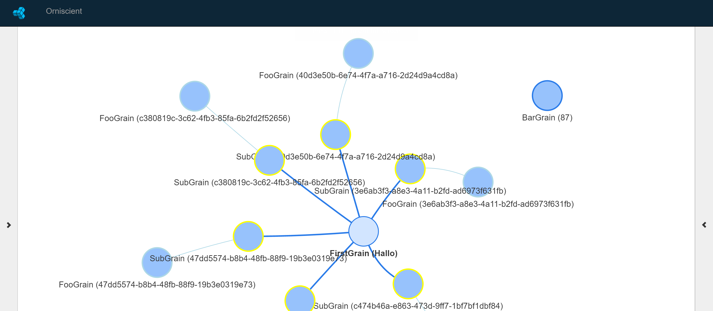

Overview
Orniscient provides an interface for visualising user grains in an Orleans cluster or meta-cluster. Grains can be filtered based on pre-defined public properties, or identifiers such as GUIDs or integer keys, in addition to concrete type definitions.
Reflection can also be used to invoke methods on active (or in future inactive) grains.
PLEASE NOTE: Status
Orniscient is still in early development and requires a post-1.2 version of Orleans to use, as it relies on a PR submitted to enable the introspection of grain data. From Orleans 1.3 onwards, Orniscient will work with any Orleans cluster.
Quick Start (WIP)
1. Install the Orniscient proxy into your cluster by stating the following into package manager:
Install-Package Derivco.Orniscient.Proxy -Pre
2. If not automatically added, manually add this snippet to your Orleans silo configuration file:
<OrleansConfiguration xmlns="urn:orleans">
<Globals>
<BootstrapProviders>
<Provider Type="Derivco.Orniscient.Proxy.BootstrapProviders.OrniscientFilterInterceptor"
Name="OrniscientFilterInterceptor"/>
</BootstrapProviders>
</Globals>
</OrleansConfiguration>
3. Download the Orniscient Viewer project, configure it to point at the cluster, build it, and execute it.
More specific details to follow.
Screenshots

How To
-
Global Grain Type Filter
We added the ability to set up a global grain type filter, to ensure that you only see the grains you are interested in. Orleans adds allot of grains that you might not want to see.
If you want to set up the global filter, you can call the following method.
OrniscientObserver.Instance.SetTypeFilter(p => p.FullName.Contains("Your namespace"));Currently this method is called in the DashboardController's index method.
-
Invoking Methods from the Dashboard
If you want to invoke methods on a grain from the Dashboard. You need to mark the methods with the OrniscientMethod attribute.
[OrniscientMethod] public Task YourMethod() {}Please note, that if the dashboard is in summary mode, the option to invoke methods is not available. You will need to use the filters to find the grain on which you would like to invoke the method on.
-
Set up links between grains
By default grains will not be linked on the dashboard. If you would like to link the grains you need to add the OrniscientGrain attribute to your grain implementation.
The following parameters is available
-
LinkFromType - This is the type you would like to link from. If not specified the grain will not be linked to anything
-
LinkType - The link Type, choose between SingleInstance(Links to grain of a specific type, that has only one instance in the system) or SameId(Links to grain of specified type with same id, ideally used for streams)
-
Colour - The border color that will be used to display the grain
-
DefaultLinkFromTypeId - The default to link to when using the SingleInstance linkType. If not specified the default value of the GrainType will be used.
example
[OrniscientGrain(typeof(SubGrain), LinkType.SameId, "lightblue")] public class FooGrain : Grain, IFooGrain, IFilterableGrain {...} -
Setting up client side filters & grain tooltips
You can set up filters for the dashboard, that you can use at runtime to find grains you are interested in. To this, you need to inherit from the IFilterableGrain interface.
If you have a grain that implements the IFilterableGrain, you will get a tooltip with this information when you hover over the grain.
example
public class FooGrain : Grain, IFooGrain, IFilterableGrain { public Task
Support or Contact
Stop by gitter to discuss the tool.